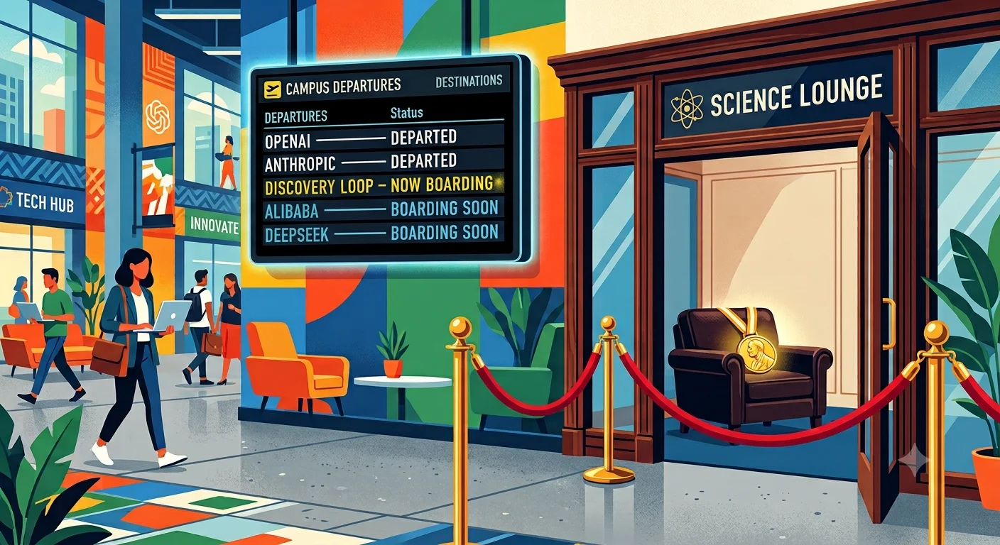

Nine months ago, Google’s redemption arc looked complete. Gemini 3 shipped in November to strong reviews, the app passed 950 million monthly users, and the Bard debacle of 2023 — the demo error that once wiped roughly $100 billion off the market cap — reads like ancient history.[1] This morning, Demis Hassabis stepped back from running Google DeepMind. Jeff Dean, Sanjay Ghemawat, Oriol Vinyals, and Quoc Le left to start a company. The stock fell five percent in early trading.[2]So the right question about today’s reorganization is not who runs DeepMind now. It is: what happened between November and August?
Start with what the departures actually are, because the “brain drain” framing undersells it. Google put three technical co-leads on Gemini in 2024: Dean, Vinyals, and Noam Shazeer — the last brought back in a roughly $2.7 billion licensing deal largely to do that job.[3] All three are gone as of this summer. Shazeer walked to OpenAI in June. Nobel laureate John Jumper left for Anthropic the same month. Dean and Vinyals left this morning.[3]
That is not attrition at the edges of a research organization; the people running the model walked out of the building in under two months.
Now read the confirmed record on the model itself. No flagship successor to Gemini 3 has shipped in nine months — not damning by itself, but conspicuous for a company that shipped its way out of the Bard hole on cadence. The trade press has reported repeated delays and an architectural rebuild of the next Gemini cycle; Google has never confirmed it, and the sourcing is too thin to lean on.[4] You don’t need it. Sundar Pichai’s own memo this morning talks about Gemini 4 — and never mentions the intermediate release the trade press spent the spring waiting for.[5] When the CEO’s letter skips straight to the next number, the cycle in between did not go well. And on July 30, six days before elevating Hassabis to focus on science, Google dissolved its Nobel-winning AlphaFold team and folded its members into Gemini, with core scientists reportedly departing for Anthropic.[6] A company long on model progress does not strip-mine its science bench to feed the product line. A company short on it does.
Then read the destinations, because they are the closest thing the market will get to insider disclosure. Shazeer, the man with the clearest view of Google’s unreleased pipeline, chose the direct competitor: the recipe works, just not here. Dean, Ghemawat, Vinyals, and Le chose a startup whose stated mission is automating the search for new architectures — “it might be that we will discover a different transformer architecture,” Le said at launch, which is a polite way of pricing the current one.[7] Jumper and the AlphaFold core chose the rival that still funds science. Three exits, three verdicts, all rendered by people who saw the roadmap from inside. Any single move can be explained by a compensation package; the pattern of destinations cannot.
Insiders didn’t publish model evaluations. They published destinations.
Against that record, today’s reorganization reads as consequence, not strategy. Companies do not decapitate and restructure their AI leadership while the flagship is on track; they do it after the cycle breaks. The honest bull case is narrow: Koray Kavukcuoglu, a DeepMind veteran since 2012, now oversees model development, frontier research, and the Gemini product teams, unified under a single operator reporting to Pichai, replacing a three-co-lead research committee.[2] If the committee were the bottleneck, consolidation would help. If the talent was the engine, Google just watched the engine leave.
What Google did manage brilliantly is the aftermath, and here the between-the-lines gets interesting. Pichai’s farewell contains the day’s most revealing sentence: “We’ll continue to work with them as a founding investor and Cloud partner.”[5] Regular readers know that structure from the revenue side — Nvidia into CoreWeave, Amazon into Anthropic, capital out as investment, and back as bookings.[8] Applied to headcount: Google holds equity in Discovery Loop, Google Cloud houses its compute for at least the first year, and a research team that was a consolidated expense becomes a customer with upside attached. There is even a recursive twist: if the next Gemini cycle really did stall on architecture, Google just bought a call option on the architecture search it couldn’t finish internally. Compare Meta, which faced its own misaligned scientist and handled it with a $14.3 billion hostile installation instead of a term sheet: Yann LeCun left, called his new boss “inexperienced,” and raised $1.03 billion for a competing lab with no Meta money in it.[9]
Google’s exits produce tenants and partners; Meta’s produced a critic.
But don’t mistake the elegance for an answer. The term sheet recovers salvage value from the exits; it does nothing to make Gemini competitive. Google still holds the strongest non-model position in the race: its own silicon, its own datacenters, distribution through Search and Android, and 950 million people already in the app, which is exactly why the market took only five percent off rather than repricing the whole company.[1] The infrastructure moat buys time. It does not train the model.
So here is the between-the-lines of August 5: Google did not announce a strategy for catching OpenAI and Anthropic this morning. It disclosed, in org-chart form, that the last one broke somewhere between November and June — and it showed that nobody in the industry finances a retreat more expertly. The elephant in the room is still there. It is just exceptionally well-financed.
Notes
[1] Gemini 3 shipped in November 2025;Google Cloud blog. The 950M+ monthly active users figure is Google’s own, fromPichai’s August 5, 2026 memo— vendor-claimed, not independently verified. Bard demo error and ~$100B single-day market cap loss: February 2023, widely reported at the time.
[2] Hassabis becomes Chair of Google DeepMind and Chief Scientist of Alphabet, continuing to lead Isomorphic Labs; Kavukcuoglu becomes SVP of Google DeepMind overseeing “Gemini model development, Frontier AI research, and the Gemini app and developer teams,” reporting to Pichai.Pichai memo, ibid.;Demis Hassabis on X;Axios. Alphabet shares fell as much as ~5% in early trading, recovering to roughly −3.5% by mid-afternoon ET:Investing.com;TradingKey. If publishing after the close, update to the closing print.
[3] Google appointed Noam Shazeer co-lead of Gemini in August 2024, alongside technical leads Jeff Dean and Oriol Vinyals:The Information;Reuters via Yahoo. The Character.AI licensing deal that returned Shazeer to Google was reported at ~$2.7B. Shazeer to OpenAI and John Jumper (Nobel Prize in Chemistry 2024, AlphaFold) to Anthropic, both June 2026:Fortune;TechCrunch.
[4] Reports of three delays and a “full architectural rebuild” of the Gemini 3.5 cycle, and of Gemini 4 pre-training beginning with no announced date:BigGo;The AI Rankings;Memeburn. C-tier sourcing, unconfirmed by Google — cited here as reports only; no claim in the body rests on them.
[5]Pichai memo, August 5, 2026. Full Discovery Loop sentence: “We’ll continue to work with them as a founding investor and Cloud partner, and collaborate on a research framework for ML systems and related infrastructure advances.” The memo references Gemini 4; it does not mention Gemini 3.5.
[6] Google DeepMind disbanded the AlphaFold team on July 30, 2026, redirecting members to Gemini work; core scientists reportedly moved to Anthropic.Engadget;PYMNTS.
[7] Discovery Loop: public benefit corporation co-founded by Dean, Ghemawat, Vinyals, and Le; automating the experimental loop of the scientific method, ML research first; Khosla Ventures and Radical Ventures backing, round size and Google’s stake undisclosed; Google Cloud compute for the first year. Quoc Le quote from launch coverage.Unite.AI;CNBC.
[8] See prior coverage of the round-trip structure:“Welcome to Hotel Abilene”and“Compute Equals Commitments”, The AI Realist.
[9] Meta’s investment in Scale AI, announced June 12, 2025: $14.3 billion for a 49% non-voting stake, with Scale CEO Alexandr Wang (then 28) joining to lead what became Meta Superintelligence Labs:CNBC. LeCun on Wang (”young,” “inexperienced”):The Decoder;CNBC. AMI Labs: $1.03 billion at a reported $3.5 billion pre-money, March 2026, co-led by Cathay Innovation, Greycroft, Hiro Capital, HV Capital, and Bezos Expeditions, with Nvidia and Eric Schmidt participating; Meta absent from the reported investor list:TechCrunch. AMI builds on the V-JEPA architecture LeCun’s team developed and open-sourced at Meta — the one asset Meta retained.